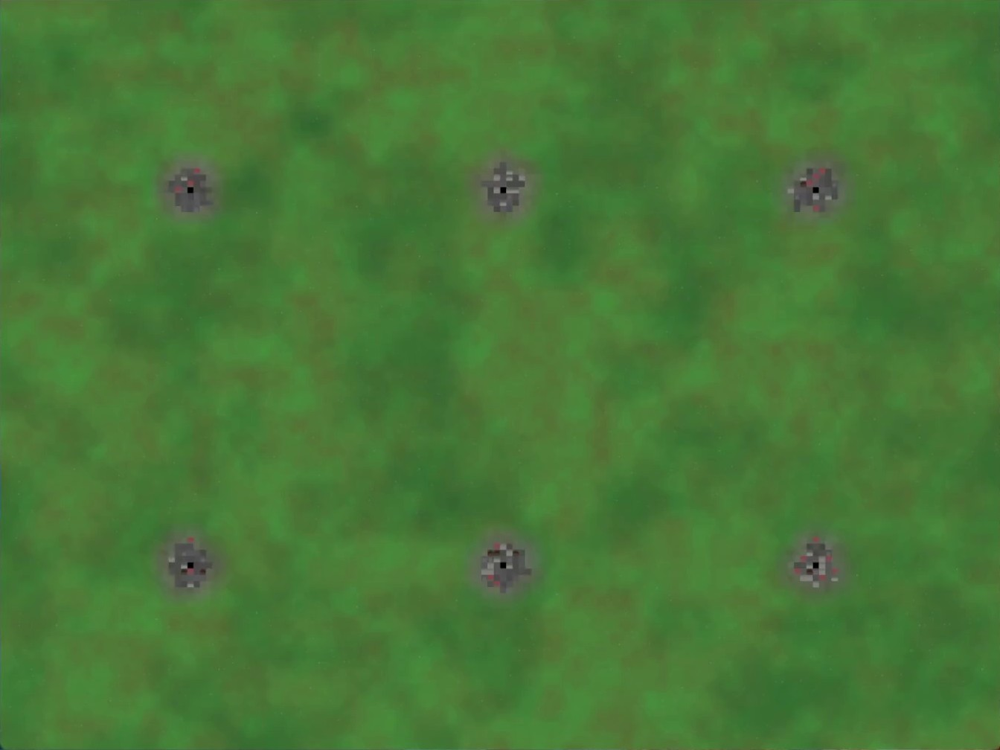
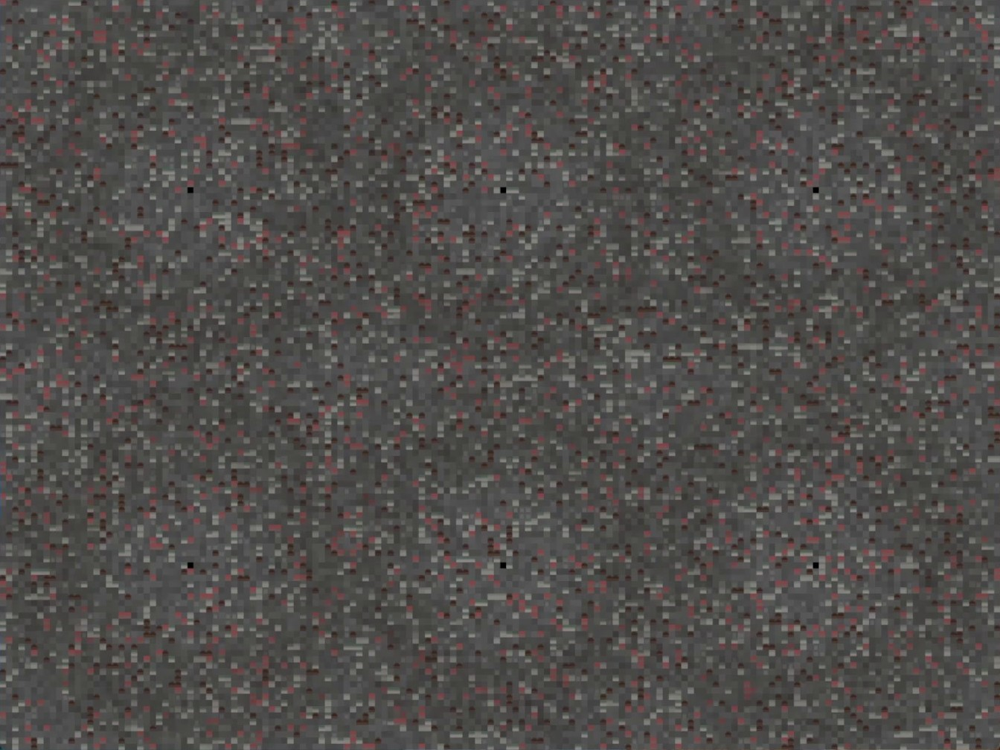
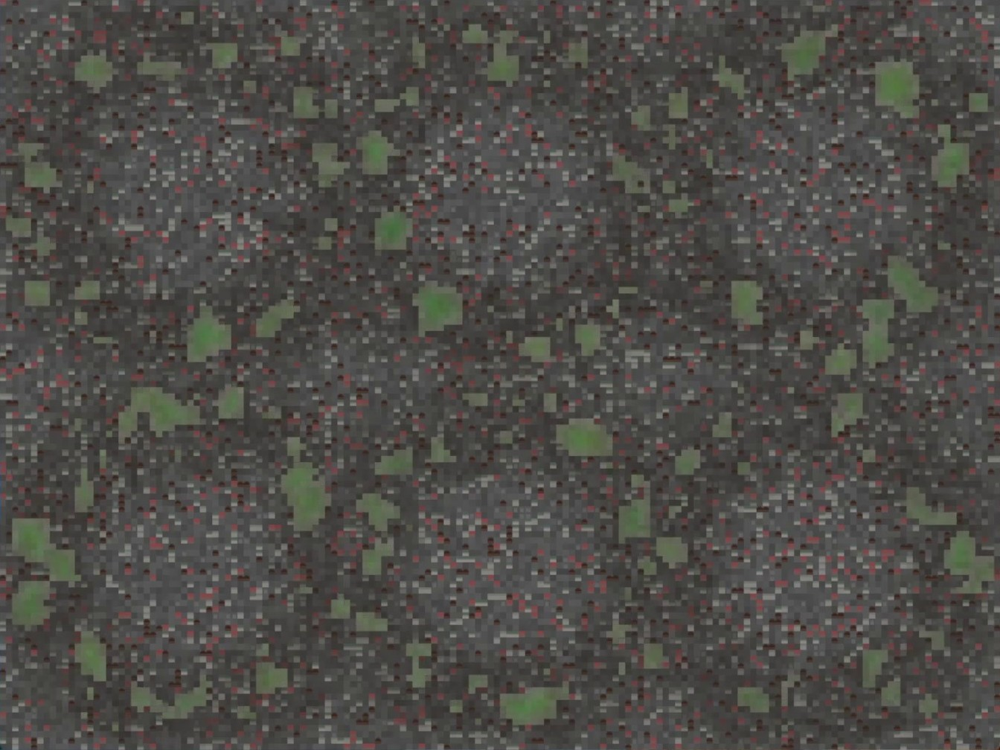

Factory states
Serial messages switch the simulation’s factories on or off.
Interactive installation
A landscape that responds to the factories visitors place and remove.

Leaving a Trace is an interactive installation where visitors reshape a wounded landscape by placing and removing factories. The landscape responds through projection, light and sound, with fog adding to the atmosphere.
I worked on the interactive visuals and atmospheric audio, helping the projection respond to visitors’ actions.
This sketch explores another way for visitors to affect a landscape, using litter and recycling. Its handwritten notes imagine projection across the table and a figure representing nature.
The installation described above uses a factory interaction; the sketch preserves a different idea for the experience.

A look at the prototype
These three moments come from a recording of a six-factory Processing prototype. Urban areas spread across the green field; later in the same recording, green patches appear again among them.



We originally intended to use six factories. On the day, one factory-proximity Arduino was not working, so I changed it to five.
The physical piece
The installation brought the landscape into a space of its own. Visitors could place and remove factories and watch the scene respond.

Behind the scene
In the Processing files, an Arduino connection supplies factory states to a grid-based simulation. The sketch combines the expanding urban areas with a system for nature to reclaim space.
Serial messages switch the simulation’s factories on or off.
Active factories expand and repair urban cells; nature affects their edges and can reclaim them.
Layered noise gives the ground grass, moss and pebble textures, while gravel appears around urban areas.
Wind and birds change with urban coverage, alongside industrial sounds linked to active factories.
This is a look at a Processing version of the project.
Luís Antônio de Albuquerque Hollanda, Felix A. Smelik, Amina I. Tatieva, Ebben M. R. van Reen, Eva Pos and Yanara P.C. Hoogwoud.